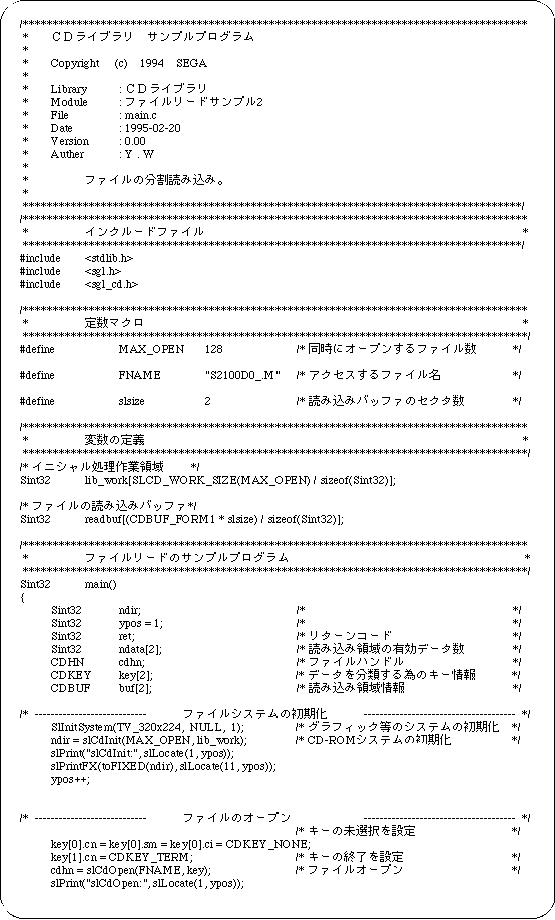
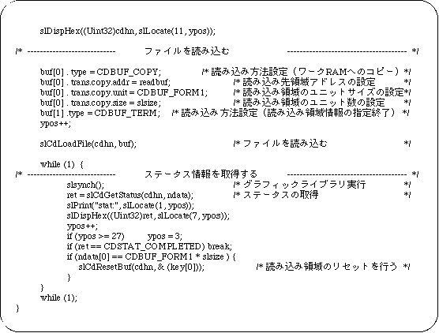

Return to previous page | Return to menu | Go to next page
Split file loading
Use the function “slCdResetBuf” to load a large amount of data such as movies.
[Bool slCdResetBuf (CDHN cdhn, CDKEY * key);]
- Returns the data load destination corresponding to the “key” of the file handle to the beginning of the area specified by the function “slCdLoadFile”.
The function "slCdGetStatus" gets the number of valid data in the reading area. When the reading area becomes full, the data is processed and the function "slCdResetBuf" is called.
Sample program 2 shows an example of a program that divides and reads data.
This sample program is a process for dividing and reading files on a CD-ROM, and is an example of using a basic library for reading files from a CD-ROM. The procedure is described along Flow 12-2.
- Performs initialization of graphics and other systems.
- Initializes the CD-ROM system.
- Opens a file.
Since there is key information for classifying data in the input parameter of the function that performs file opening, set this information as necessary.
- The file is read using the file handle and read area information of the return value of the file open function as parameters.
- Executes the graphic library (function “slSynch ()”).
The file specified by reading the file is actually read little by little at this time.
- Get status information and check if the file has been read.
At the same time, check whether the reading area is full. If it is full, process the data as needed and then reset the reading area.
If the file has not been read, it loops until the status is read.
In this loop, call the function “slSynch ()”.
Flow 12-2 Sample program 2 (file division reading sample_cd2 / main.c)


List 12-2 Sample program 2 (file division load sample_cd2 / main.c) (continued)

Return to previous page | Return to menu | Go to next page